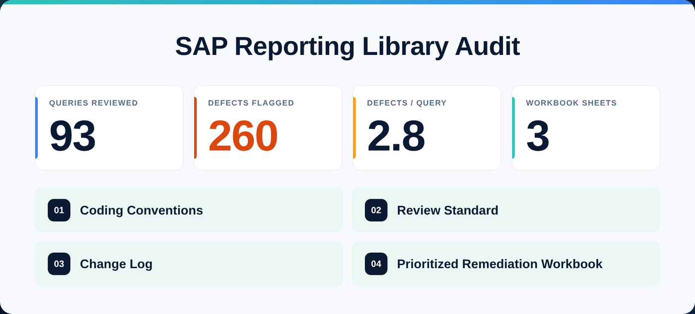

Case Study
Auditing an SAP Business One Reporting Library: 93 Queries, 260 Issues
Years of saved SAP queries, written by different people with no shared rules. Nobody knew which reports could be trusted. Here's how the library was reviewed, and what changed.
 Rishad Ahmed · November 2, 2026 · 1 min read
Rishad Ahmed · November 2, 2026 · 1 min read

The Problem
Over the years, the company's SAP Business One reporting library had grown to 93 saved queries in Query Manager, written by different people at different times, with no shared rules. Totals disagreed between reports, some queries slowed SAP down for everyone, and nobody could say which numbers to trust.
What I Did
- An automated review that scored every query for correctness and performance.
- 260 issues flagged, about 2.8 per query. Common ones: cancelled documents counted as sales, credit memos left out, freight repeated on every line, and date ranges that silently dropped the last day.
- A prioritized remediation workbook in three sheets, so the most damaging issues were fixed first and every fix was tracked.
What Stays in Place
Fixing old reports is only half the job. The audit also produced coding conventions, a review standard and a change log. Every report written since follows the same rules and passes the same checklist before it goes live, so the library stays trustworthy.
Is your report library in the same state? A Data Health Check starts with exactly this kind of review: a read-only scan of your saved reports, with a ranked fix list.